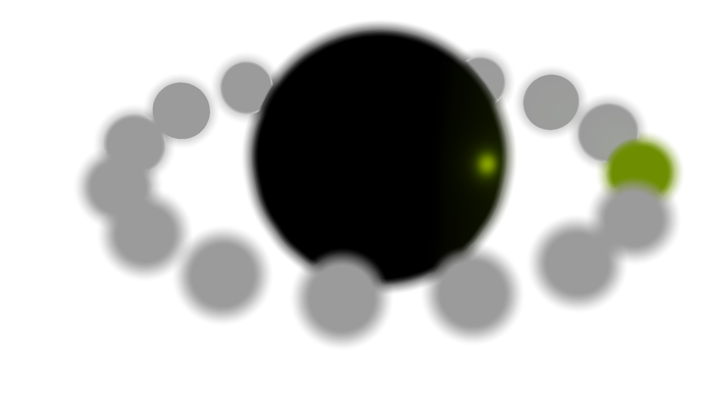

Kuesa post-processing effects
It is possible to use them from both C++ and QML, as well as implement custom additional post-processing effects in C++.
Using post-processing effects
Effects are provided by the following import:
import Kuesa.Effects 1.1
They can be added to postProcessingEffects in Kuesa.ForwardRenderer. For example, the following example first applies a threshold effect to the scene, followed by a bloom.
Kuesa.ForwardRenderer {
postProcessingEffects: [ thresholdFx, bloomFx ]
}
BloomEffect { id: bloom }
ThresholdEffect { id: threshold }
Effect gallery



Tone Mapping and Gamma Correction
Implementing a custom effect.
To introduce a new effect, it is possible to inherit from Kuesa::AbstractPostProcessingEffect. The core idea will be to provide a set of frame graph nodes, and a layer, which implement the effect.
Both color and depth textures are available to implement effects.
In order to simplify effect implementation, the Kuesa::FullScreenQuad utility class is provided. It renders a given material in a plane mesh.
A typical simple effect which applies a fragment shader to the output will need :
- A root framegraph node.
- A material to store the shader.
- An effect to register the techniques - one per graphics API supported by the effect. To indicate that the technique is to be used by the Kuesa forward renderer, it is necessary to add a filter key to your techniques to match
renderingStyle == forward. - A render pass with an associated shader program. Note that a default passthrough vertex shader is provided by Kuesa :
qrc:/kuesa/shaders/gl3/passthrough.vertqrc:/kuesa/shaders/es2/passthrough.vertqrc:/kuesa/shaders/es3/passthrough.vert
The render pass can be filtered by a Qt3DRender::QRenderPassFilter.
- A quad on which the effect will be rendered, which can be provided by the Kuesa::FullScreenQuad convenience class.
The implementation of the thresholding effect can give a good starting point to create simple post-processing effects. The implementation of the Gaussian blur effect can give a good starting point to create multi-pass post-processing effects.